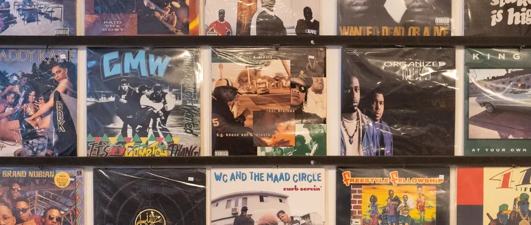
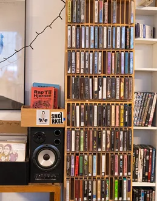
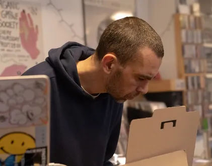
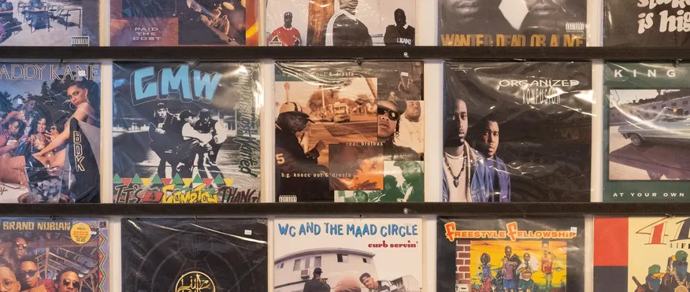
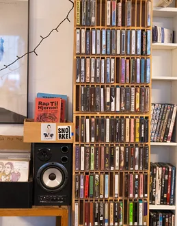
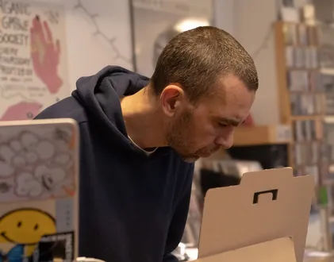

Peter Nørgaard Hansen:
Passion for musik
Medarbejder i Rekords på Bragergade 1 på nørrebro
Peter arbejder i REKORDS, en lille, men vibrerende vinylbutik på Nørrebro, der er en skattekiste for enhver, der elsker hiphop-musik. Med hylder, der bugner af alt fra ikoniske klassikere til sjældne undergrundsudgivelser, har Peter skabt et sted, hvor musikkens sjæl lever videre på pladernes riller. Hans passion for musik stråler igennem i alt, han gør – fra den måde han omhyggeligt kuraterer butikkens sortiment til de dybe samtaler, han har med kunderne om beats, tekster og produktioner. For Peter er REKORDS ikke bare en butik – det er en base for fællesskab og en hyldest til hiphoppens kultur og arv.
Billedegalleri
 




